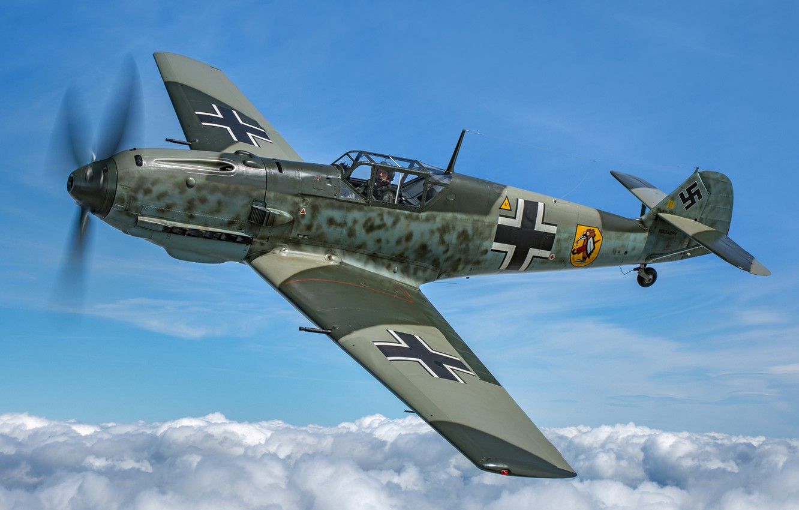
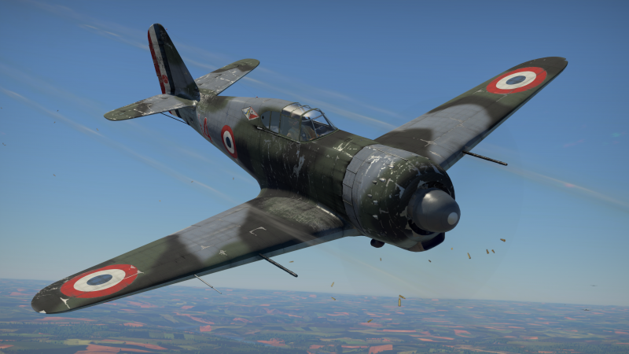

The German Me262 was the world's first operational jet-powered fighter developed during WWII. It had a top
speed of over 800 km/h. More information

The Bf109 was a highly maneuverable German fighter in WWII, with a top speed of 640 km/h. Armed with two
machine guns and a cannon. More information
The Me264 was a long-range German bomber aircraft designed during WWII. It had a top speed of 565 km/h and
a range of over 11,000 km. More information
The Russian Mig-3 was a fighter aircraft used in World War II. It had a top speed of 640 km/h. More information
The Yak-9 was a Soviet fighter aircraft used in World War II. It had a top speed of 655 km/h. More information
The Pe-8 was a Soviet heavy bomber aircraft developed during World War II. It had a top speed of 426 km/h
and could carry up to 5,000 kg of bombs. More information

The Bloch MB.150 was a French fighter aircraft developed before World War II. It had a top speed of around
470 km/h and was armed with one cannon and four machine guns. More
information
The Dewoitine D.520 was a French fighter aircraft developed before World War II. It had a top speed of
around 529 km/h. More information